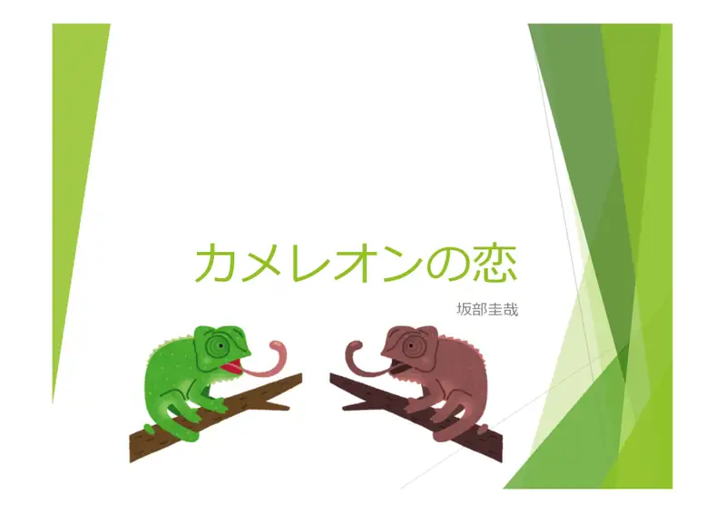
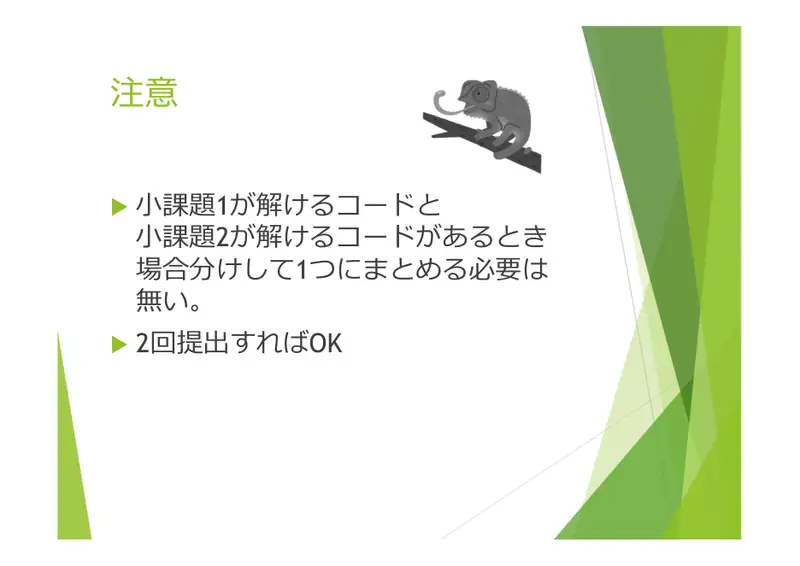
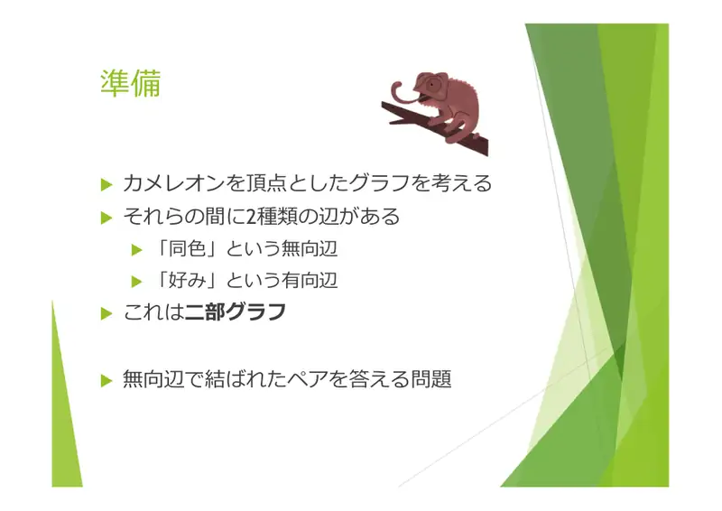
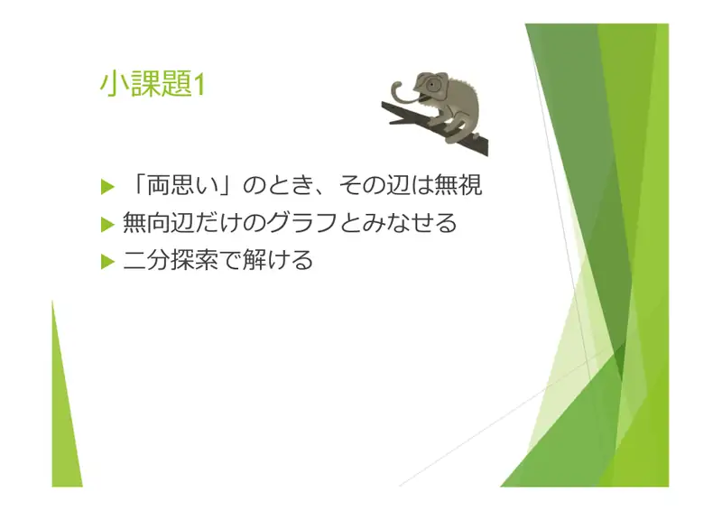
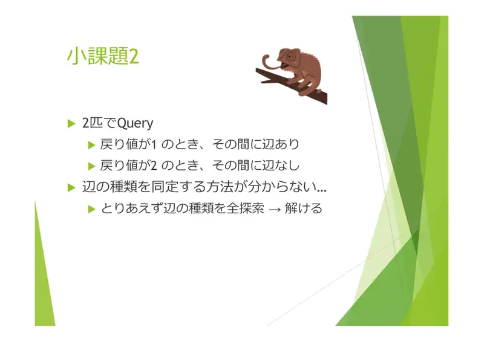
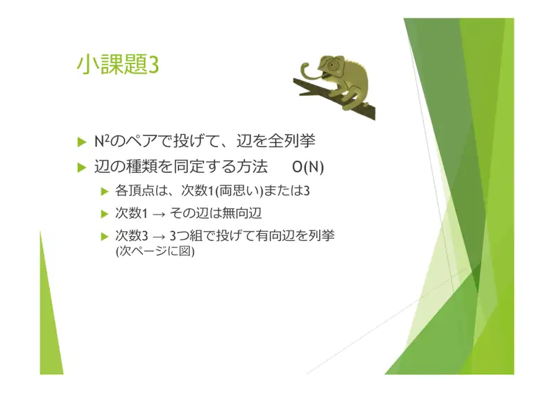
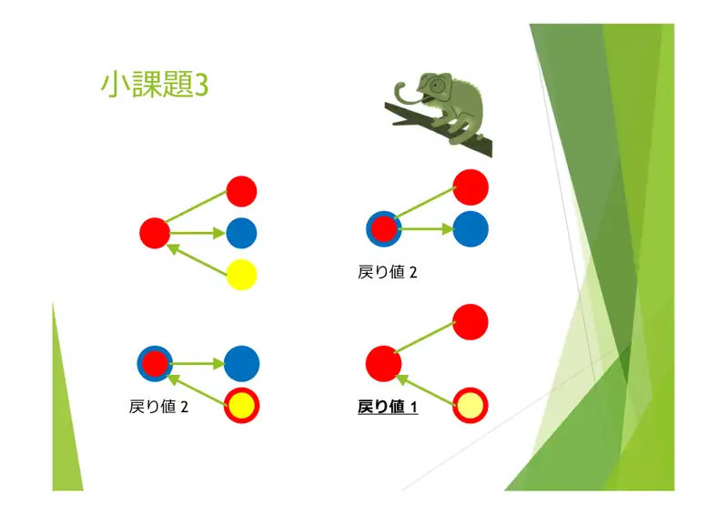
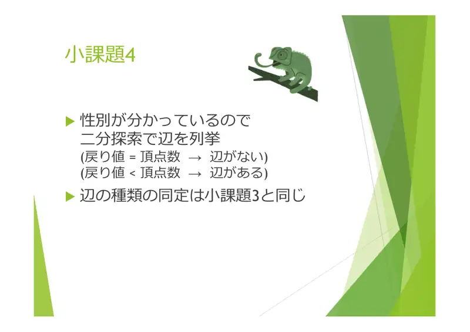
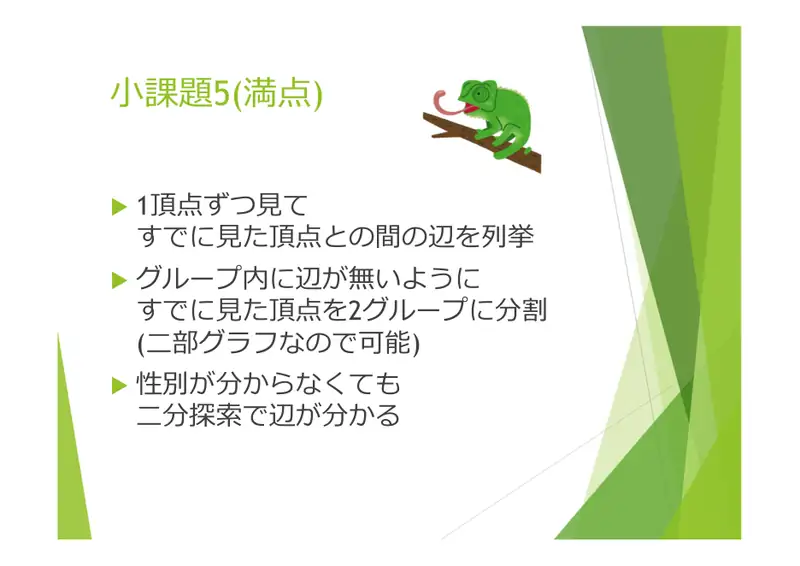
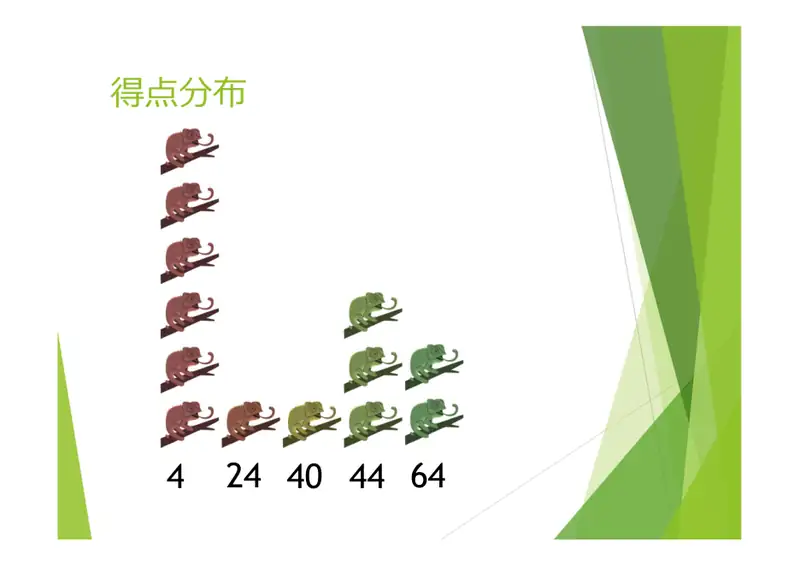

Analiza rješenja · JOI Spring Camp 2020 · Dan 2
Kameleonska ljubav
O ovom članku
Tekst je prijevod službene japanske prezentacije rješenja, preoblikovan u članak. Slajdovi su ugrađeni kao slike; natpis pod svakim slajdom je prijevod teksta na njemu. Dijelovi označeni kao trenerska napomena nisu u izvornoj prezentaciji — dodani su da popune korake koje slajdovi preskaču ili samo skiciraju.
Slajdovi
Uvod i model
izvorni slajdovi 1–3
-

1Naslovni slajd: Kameleonska ljubav, analiza: Sakabe Keiya. -

2Napomena: ako imaš kod za podzadatak 1 i drugi za podzadatak 2, ne moraš ih spajati granjanjem — možeš predati dvaput. -

3Priprema. Kameleoni su vrhovi grafa s dvije vrste bridova: neusmjereni „ista boja” i usmjereni „voli”. Graf je bipartitan (po spolu). Tražimo parove spojene neusmjerenim bridom.
← → tipke ili klik na sliku
Podzadaci 1–3 44 boda
Koraci algoritma
Od uzajamne ljubavi do prepoznavanja bridova
izvorni slajdovi 4–7
-

4Podzadatak 1. Kod uzajamne ljubavi taj se brid u upitima ne vidi, pa graf ima samo neusmjerene bridove — istobojni par nađemo binarnim pretraživanjem. -

5Podzadatak 2. Upit nad dva kameleona: $1$ → između njih je brid, $2$ → nema. Vrstu brida ne znamo odmah… za $N \le 7$ jednostavno isprobaj sve mogućnosti vrsta bridova. -

6Podzadatak 3. Upitaj svih $\binom{2N}{2}$ parova i popiši bridove. Vrsta brida u $O(N)$: svaki vrh ima stupanj $1$ (uzajamna ljubav → brid je „ista boja”) ili $3$ (upitaj trojke i odredi usmjerene bridove — slika na sljedećem slajdu). -

7Vrh (crveni) s tri susjeda: crveni (ista boja), plavi (koga voli), žuti (koji ga voli). $\{v, \text{plavi}, \text{crveni}\}$ → $2$; $\{v, \text{plavi}, \text{žuti}\}$ → $2$; $\{v, \text{crveni}, \text{žuti}\}$ → $1$: $v$ ostaje crven, crveni je crven, žuti poprima $v$-ovu crvenu.
← → tipke ili klik na sliku
Podzadatak 4 20 bodova
Slajd
izvorni slajd 8
-

8Spolovi su poznati. Bridove nabrajamo binarnim pretraživanjem: za skup $S$ jednog spola i vrh $v$ drugog, $\mathrm{Query}(S \cup \{v\}) = |S| + 1$ znači „nema brida”, manja vrijednost „ima brida”. Vrstu brida određujemo kao u podzadatku 3.
Podzadatak 5 36 bodova
Slajd
izvorni slajd 9
-

9Vrhove gledamo jedan po jedan i nabrajamo bridove prema već viđenima. Viđene vrhove držimo podijeljene u dvije grupe bez unutarnjih bridova (moguće jer je graf bipartitan). Tako binarno pretraživanje radi i bez poznavanja spolova.
Slajd
izvorni slajd 10
-

10Distribucija bodova: vrhovi na $4$, $24$, $40$, $44$, $64$ i $100$.
Sažetak
- Par vraća $1$ ⇔ ista boja ili jednosmjerna ljubav; uzajamna ljubav je nevidljiva → stupnjevi $1$ ili $3$.
- Trojka bez $v$-ove ljubavi vraća $1$ → identificiramo usmjerene bridove.
- Bridove prema skupu bez unutarnjih bridova nalazimo rekurzivnim polovljenjem; skupove daje 2-bojenje bipartitnog grafa.